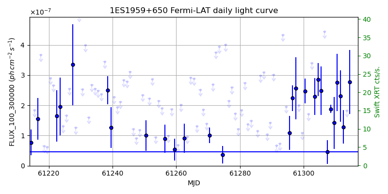
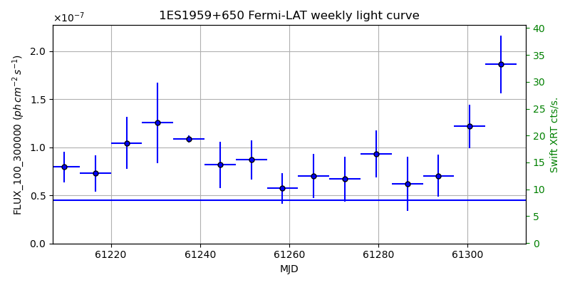
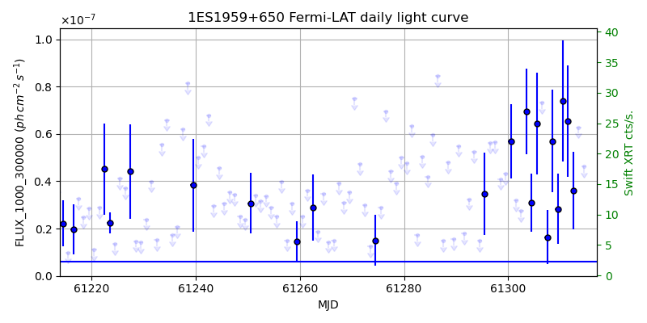
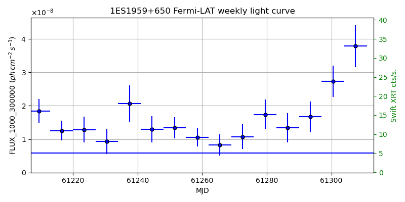

LAT Lightcurve site: https://fermi.gsfc.nasa.gov/ssc/data/access/lat/msl_lc/source/1ES_1959p650
Swift site: https://www.swift.psu.edu/monitoring/source.php?source=1ES1959+650
NED: Query
Time of last update of this page: UT: 2026-10-02 15:26 (MJD: 61315.644)
| Property | Value |
|---|---|
| R.A. | 20:00:00.00 |
| Dec. | 65:08:56.4 |
| z | 0.047 |
| 3FGL SpectrumType | PowerLaw |
| 3FGL PL Index | 1.88 |
| 3FGL Flux_100_300000 | 4.53e-08 1 / (s cm2) |
| 3FGL Flux_1000_300000 | 5.90e-09 1 / (s cm2) |
| 3FGL Flux >200 GeV | 5.42e-11 1 / (s cm2) |
| 3FGL Extrap. Crab >200 GeV | 0.23 |
| 3FGL Flux After EBL Absorption >200GeV | 4.19e-11 1 / (s cm2) |
| 3FGL EBL Crab Fraction >200GeV | 0.18 |

| MJD | dMJD | Flux | dFlux | Frac3FGL | FracCrab>200GeV | EBLFracCrab>200GeV |
|---|---|---|---|---|---|---|
| 61310.50 | 0.50 | 2.76e-07 | 9.49e-08 | 6.08 | 1.41 | 1.09 |
| 61311.50 | 0.50 | 2.31e-07 | 8.50e-08 | 5.09 | 1.18 | 0.91 |
| 61312.50 | 0.50 | 1.28e-07 | 5.55e-08 | 2.83 | 0.66 | 0.51 |
| 61313.50 | 0.50 | 1.83e-07 | 0.00e+00 | 0.00 | 0.00 | 0.00 |
| 61314.50 | 0.50 | 2.78e-07 | 1.06e-07 | 6.13 | 1.42 | 1.10 |

| MJD | dMJD | Flux | dFlux | Frac3FGL | FracCrab>200GeV | EBLFracCrab>200GeV |
|---|---|---|---|---|---|---|
| 61279.50 | 3.50 | 9.33e-08 | 2.45e-08 | 2.06 | 0.48 | 0.37 |
| 61286.50 | 3.50 | 6.19e-08 | 2.83e-08 | 1.37 | 0.32 | 0.25 |
| 61293.50 | 3.50 | 7.05e-08 | 2.20e-08 | 1.55 | 0.36 | 0.28 |
| 61300.50 | 3.50 | 1.22e-07 | 2.25e-08 | 2.69 | 0.62 | 0.48 |
| 61307.50 | 3.50 | 1.86e-07 | 3.01e-08 | 4.11 | 0.95 | 0.73 |

| MJD | dMJD | Flux | dFlux | Frac3FGL | FracCrab>200GeV | EBLFracCrab>200GeV |
|---|---|---|---|---|---|---|
| 61310.50 | 0.50 | 7.39e-08 | 2.57e-08 | 12.53 | 2.91 | 2.25 |
| 61311.50 | 0.50 | 6.55e-08 | 2.35e-08 | 11.11 | 2.58 | 2.00 |
| 61312.50 | 0.50 | 3.60e-08 | 1.63e-08 | 6.11 | 1.42 | 1.10 |
| 61313.50 | 0.50 | 6.28e-08 | 0.00e+00 | 0.00 | 0.00 | 0.00 |
| 61314.50 | 0.50 | 4.63e-08 | 0.00e+00 | 0.00 | 0.00 | 0.00 |

| MJD | dMJD | Flux | dFlux | Frac3FGL | FracCrab>200GeV | EBLFracCrab>200GeV |
|---|---|---|---|---|---|---|
| 61279.50 | 3.50 | 1.74e-08 | 4.47e-09 | 2.94 | 0.68 | 0.53 |
| 61286.50 | 3.50 | 1.34e-08 | 4.41e-09 | 2.27 | 0.53 | 0.41 |
| 61293.50 | 3.50 | 1.67e-08 | 4.64e-09 | 2.83 | 0.66 | 0.51 |
| 61300.50 | 3.50 | 2.73e-08 | 4.72e-09 | 4.63 | 1.07 | 0.83 |
| 61307.50 | 3.50 | 3.78e-08 | 6.28e-09 | 6.42 | 1.49 | 1.15 |
--------------------------------------------------------- Using user-supplied coords: 20:00:00.00 65:08:56.4 2000 --------------------------------------------------------- FLWO UT night of: 2026-10-03 Local Sid. @ Midnight: 00:24 Sunset (-15.0) (local, UT): 19:14 02:14 Sunrise (-15.0) (local, UT): 05:12 12:12 Moonrise (local, UT): 22:48 05:48 Moonset (local, UT): Moon phase: 0.53 --------------------------------------------------------- AzTime LSID UT Obj_el Obj_az Mn_el Mn_az Sep. --------------------------------------------------------- 19:14 19:37 02:14 56.3 4.3 -28.5 20.1 85.9 19:44 20:07 02:44 56.4 358.7 -26.2 26.7 85.9 20:14 20:37 03:14 56.0 353.1 -23.2 32.8 86.0 20:44 21:07 03:44 54.9 347.8 -19.6 38.5 86.1 21:14 21:37 04:14 53.3 343.2 -15.7 43.6 86.1 21:44 22:07 04:44 51.2 339.3 -11.3 48.4 86.2 22:14 22:37 05:14 48.8 336.2 -6.5 52.7 86.2 22:44 23:07 05:44 46.1 333.8 -0.8 56.7 86.3 23:14 23:37 06:14 43.2 332.1 3.8 60.4 86.3 23:44 00:07 06:44 40.2 331.1 9.1 63.9 86.3 00:14 00:38 07:14 37.0 330.6 14.6 67.1 86.4 00:44 01:08 07:44 33.9 330.6 20.3 70.2 86.4 01:14 01:38 08:14 30.8 331.0 26.1 73.1 86.4 01:44 02:08 08:44 27.7 331.8 32.1 76.0 86.4 02:14 02:38 09:14 24.7 332.9 38.1 78.8 86.5 02:44 03:08 09:44 21.9 334.4 44.2 81.7 86.5 03:14 03:38 10:14 19.2 336.2 50.3 84.8 86.5 03:44 04:08 10:44 16.7 338.2 56.5 88.1 86.6 04:14 04:38 11:14 14.5 340.5 62.7 91.9 86.6 04:44 05:08 11:44 12.5 343.0 68.9 96.9 86.6 05:12 05:37 12:12 10.9 345.6 74.7 103.8 86.7 --------------------------------------------------------- Dark hours >55 deg.: 1.47 srcstart (UT): 2026-10-03 02:13 srcend (UT): 2026-10-03 03:41